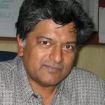
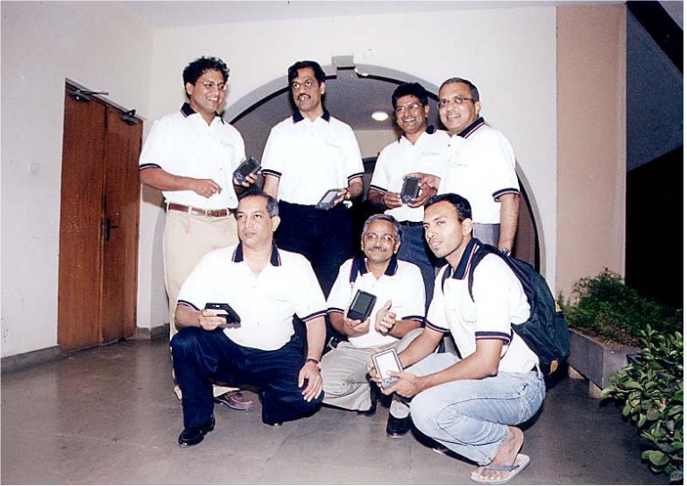
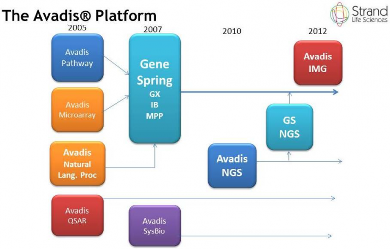
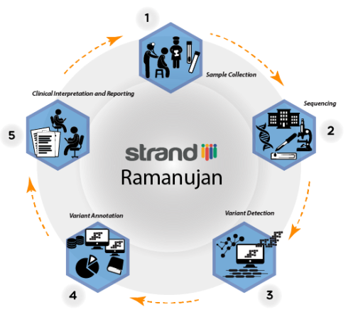

The journey into life and health science for Professor Chandru which began in the mid-90s has been a story of science meets technology that leads to innovation – the way it is supposed to work. From computational complexity at MIT to precision medicine at Strand Life Sciences.

Molecular biology got a great boost in the late 80s when the human genome project was conceived and the US and UK governments together pumped in around $3 billion of funding over the next 15 years to get the human reference genome sequenced and verified. The transduction of biology that happened as a consequence required the "best in class" computer science to stand shoulder to shoulder with the biologists.
Strand appeared on the scene early in this phase and rapidly began to partner with researchers from around the world who had the wherewithal to set up outstanding experiments but needed help with the data analysis. Strand's scientists were co-authors in a number of high quality publications, including two articles in Cell that made the cover in 2010.
In 2010, Strand also ventured into setting up the first next-generation sequencing lab in Bangalore in an interesting public-private partnership called Ganit Labs with central and state government participation. Ganit Labs successfully assembled the genome of the Neem Tree (Azadirachta indica).
Chandru's doctoral dissertation work was in the computational complexity of combinatorial optimization. Theoretical computer scientists and logicians had developed a hierarchy of computation and the focus in the late 70s was on positioning practical engineering design problems on combinatorial and discrete structures in this hierarchical framework.
This foundational work established connections between integer programming and complexity theory, leading to new insights about the limits and possibilities of optimization algorithms.
more details →"Theoretical computer scientists and logicians had developed a hierarchy of computation."
"As a young assistant professor at Purdue, Chandru developed a new research area around the computer manipulation of geometric objects."
As a young assistant professor at Purdue, Chandru developed a new research area for himself around the computer manipulation of planar and solid geometric objects.
This research laid early groundwork for digital manufacturing and 3D printing technologies. His work on geometric algorithms for manufacturing process planning contributed to the development of computer-aided design (CAD) systems.
more details →Automated Theorem Proving, the cornerstone of "Strong AI", refers to the ability to create intelligent machines that can implement the formal rules of deductive inference and derive formal inferences from a set of axioms.
Together with John Hooker of Carnegie Mellon University, Chandru co-authored "Optimization Methods for Logical Inference," published by Wiley Interscience. This seminal work bridged the gap between integer programming and logic.
more details →"This seminal work bridged the gap between integer programming and logic."

"The Simputer (Simple, Inexpensive, Multilingual Computer) was designed to bring computing to rural and semi-urban India."
The Simputer project grew out of a multi-disciplinary dialogue conducted at the National Institute of Advanced Studies by its director Prof R Narasimha, the venerated social anthropologist Prof MN Srinivas and a dynamic young IAS officer Sanjay Biswas who was the IT Secretary of Karnataka in 1998.
The Simputer (Simple, Inexpensive, Multilingual Computer) was designed to bring computing to rural and semi-urban India. Recognized by The New York Times as the ICT innovation of the year (2001).
more details →The Avadis platform, developed by Strand Life Sciences, became one of the world's leading bioinformatics software solutions for analyzing gene expression data. Partnering with Agilent Technologies, the GeneSpring® platform was adopted by thousands of research laboratories globally.
Strand's scientists were co-authors on numerous high-impact publications, including two Cell cover articles in 2010.
more details →
"The Avadis platform became one of the world's leading bioinformatics software solutions."

"The Strand Ramanujan initiative focused on precision oncology, using whole-genome sequencing and advanced analytics."
In 2012, the founders and management decided to transform Strand into a new generation healthcare company. This bold strategic decision was motivated by the emerging impact of genomics in healthcare and the opportunity for a life sciences company with deep data science capabilities to push the envelope.
The Strand Ramanujan initiative focused on precision oncology, using whole-genome sequencing and advanced analytics to guide cancer treatment decisions.
more details →